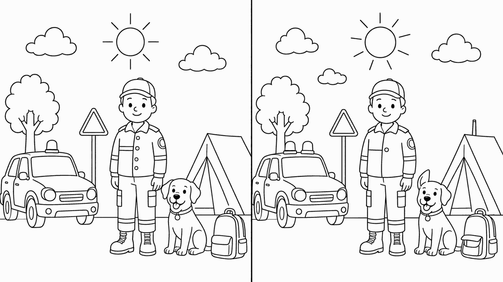

Protezione CivileGruppo Comunale Volontari — Genzano di Roma
Bambini · 6-8 anni
Trova le 7 differenze!
6-8 anni🔍 Confronta le due scene e cerchia le 7 differenze tra il disegno a sinistra e quello a destra.

1
2
3
4
5
6
7
Spunta i quadrati man mano che trovi le differenze!
🔑 Soluzione — gira il foglio sottosopra per leggere
1) Il sole: a destra è più grande e con più raggi · 2) Nel cielo a destra c'è una piccola nuvola in più · 3) Il lampeggiante sul tetto del mezzo: uno a sinistra, due a destra · 4) I bottoni della giacca del volontario: quattro a sinistra, uno a destra · 5) L'orecchio del cane: a destra è dritto in su · 6) La punta della tenda: a destra ha un camino · 7) La tasca davanti dello zaino: a destra è più piccola.